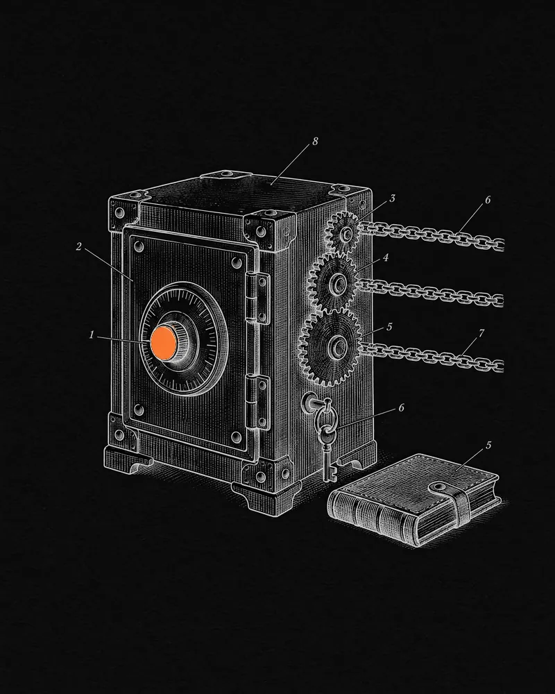

FUSION Foundation · 2018 — 2021
A new chain’s front door
From volunteer community site to main author of the official wallet and block explorer — the two ways people entered and saw FUSION when its mainnet launched in 2019.
- Role
- Blockchain System Analyst · Head of the Developers Community
- When
- October 2018 — September 2021
- Code
- 1,444 of the wallet’s 1,674 commits · 235 of the explorer’s 240
- Built with
- JavaScript · AngularJS · React · Node.js · web3.js · MongoDB · Go (go-ethereum fork) · Ledger & Trezor

Context
FUSION is an open-source protocol built to connect traditional and crypto finance, founded by DJ Qian and funded by a token sale of about $42M in February 2018. By the end of that year it had 36+ people across New York, Shanghai, Singapore and South Africa, and a new chain heading for mainnet.
I started as a volunteer — I built the Fusion community website — and in July 2018 FUSION announced me as its Developers Community Leader. I joined full-time that autumn, leaving university to do it, as Blockchain System Analyst.
The challenge
FUSION introduced primitives that standard Ethereum tooling can’t represent: time-locked balances, short account numbers, ticket-based staking and atomic multi-asset swaps. Holders had to use all of it from a browser while their ERC-20 tokens migrated to a brand-new chain — against a fixed mainnet date of 30 June 2019. That meant a wallet that understood the new primitives, and an explorer that could decode transaction types no explorer had seen before.
What I did
- Main author of MyFusionWallet, FUSION’s official “universal wallet” — 1,444 of its 1,674 commits — turning a MyEtherWallet fork into a wallet for time-locks, Quantum Swaps, asset creation and Short Account Numbers, with Ledger and Trezor support. Used by 50K+ people.
- Built the official block explorer — 235 of its 240 commits — and the indexer queries behind it, decoding tickets, time-locks and swaps; switched it to mainnet on launch day.
- Shipped the wallet and explorer for the PSN testnet in December 2018 and for mainnet on 30 June 2019.
- Led the developers community and built its tooling: the node manager script and staking guide for the Go node, the network stats monitor, a command-line tool and a React dApp starter.
How it works
- 01MigrateERC-20 FSN holders swap one-to-one into native FSN on the new chain.
- 02OpenThe wallet opens by keystore, key, Ledger or Trezor — and a 3–5 digit short account number replaces the 0x address.
- 03TransactCreate assets without contracts, send time-locked balances and run Quantum Swaps.
- 04StakeNodes lock 5,000-FSN tickets for 30 days; a lottery picks the ticket that signs each block.
- 05SeeAn indexer feeds the explorer, which shows blocks, assets, tickets, time-locks and swaps.
The road to mainnet
Outcome
- 1,444commits to the official wallet — 86% of its history
- 235 / 240commits to the official block explorer
- 50K+people using the wallet
- 250+nodes and 10M+ FSN staked within days of mainnet
- 364K+transactions and 69 assets in the first three weeks
- 1M+transactions on the PSN testnet before launch
FUSION’s mainnet went live on 30 June 2019. The wallet and explorer stayed its official front ends, and FUSION’s CTO went on to co-found Betcha — where I worked next.
“Joey has already demonstrated a passionate and meticulous approach to the tech projects that motivate him.”
Sources
- Key team members join FUSIONFUSION Foundation · Jul 2018 ↗
- FUSION team: Joey Kheireddine, Blockchain System Analystfusion.org (archived) ↗
- MyFusionWallet, the official wallet — code and contributorsGitHub ↗
- The official block explorer — code and contributorsGitHub ↗
- Fusion Foundation announces mainnet launchGlobeNewswire · Jun 2019 ↗
- June newsletter: mainnet live, nodes and stakingFUSION Foundation · Jul 2019 ↗
- Staking, “lottery” tickets and rewards on the PSNFUSION Foundation · Dec 2018 ↗
- Network totals three weeks after mainnetFUSION API (archived) ↗
- fusion.org: “36+ employees, 12+ languages”fusion.org (archived) · Dec 2018 ↗